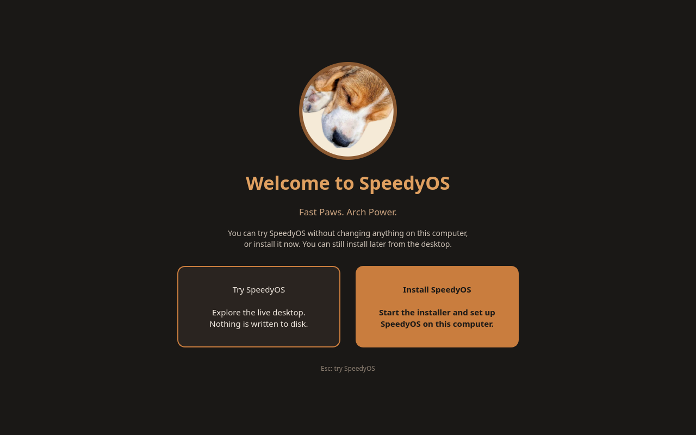

Pure Arch Linux base
Rolling release with the official Arch repositories. SpeedyOS adds defaults, not a fork — everything on the ArchWiki applies.
Fast Paws. Arch Power.
A fast, friendly Arch Linux distribution with the KDE Plasma 6 desktop, a graphical installer, automatic Btrfs snapshots and the easy-to-remember speedy command. Named after Speedy, a very good beagle.
One image for trying and installing. Boot it from a USB stick, explore the live desktop, then install when you're ready.
Live / install image for 64-bit PCs. UEFI and legacy BIOS boot entries.
GitHub limits release files to 2 GiB, so the ISO comes in 2 parts. Download all of them into one folder, then join them:
Linux / macOS57cc583e07ae440c707ea324442fd0541be6562875631532f832be7b83e34604
sha256sum -c speedyos-2026.10.14-x86_64.iso.sha256
Everything here ships in the current ISO.
Rolling release with the official Arch repositories. SpeedyOS adds defaults, not a fork — everything on the ArchWiki applies.
A modern desktop with SpeedyOS's own look-and-feel, warm chocolate-and-amber color scheme, wallpapers and Konsole theme.
The live session opens a “Try or Install” screen. Explore without touching your disk, then launch the Calamares graphical installer — nothing is preselected and every disk change is shown before it happens.
Btrfs by default with snapper and snap-pac: a snapshot before and after every package change, bootable from the GRUB menu. Roll back with speedy undo <n>.
speedy commandMemorable commands for everyday tasks — update, install, search, doctor, clean. It always shows the exact command it runs and confirms destructive actions.
yay and base-devel are preinstalled. speedy install falls back to the AUR — with a clear warning — and speedy update updates AUR packages too.
speedy drivers detects your GPU and recommends the right NVIDIA, AMD or Intel drivers. A background timer notifies you when updates are available.
Paw-print Plymouth boot splash, a themed GRUB menu, a Welcome Center for new users, and a few tricks: try speedy dance.
A real screenshot of this ISO booting in a virtual machine, and real output from its terminal.

$ speedy version speedy 0.4.0 SpeedyOS 2026.10 "Beagle Run" Base: Arch Linux $ speedy help # all commands $ speedy update # Arch + AUR $ speedy install gimp $ speedy search editor $ speedy doctor # health check $ speedy drivers # GPU advice $ speedy snapshots $ speedy undo 4 $ speedy dance # very important $
Complete reference: docs/SPEEDY_COMMANDS.md
Install from the ISO, or build the ISO yourself from source.
Download every ISO part and the .sha256 file above into one folder, join the parts, then check the result:
cat speedyos-*.iso.part* > speedyos.iso # Windows: see the download box sha256sum speedyos.iso # must match the checksum above
Everything on the stick is erased — double-check the device name. Ventoy or GNOME Disks also work.
lsblk # find the stick, e.g. /dev/sdX
sudo dd if=speedyos-*.iso of=/dev/sdX bs=4M status=progress oflag=sync
Boot from the stick (often F12, F11, Esc or F8 at power-on; Secure Boot off) and choose SpeedyOS live. You're logged in automatically and can pick Try SpeedyOS or Install SpeedyOS.
The installer walks through language, location, keyboard, partitions (Btrfs by default, optional LUKS encryption), and your user account. Nothing is written until you confirm the summary. Then restart, log in, and run:
speedy update # full upgrade speedy drivers # recommended graphics drivers speedy doctor # health check
Prefer a virtual machine first? With the source checked out: ./scripts/run-vm.sh live boots the ISO in QEMU. Details in docs/TESTING.md.
About 15 GB free disk and 8 GB RAM recommended. Your user needs entries in /etc/subuid and /etc/subgid.
git clone https://github.com/playthegame292/speedyos.git && cd speedyos
sudo pacman -S --needed archiso arch-install-scripts squashfs-tools \
libisoburn dosfstools e2fsprogs mtools erofs-utils grub \
qemu-desktop edk2-ovmf python-pillow python-yaml
./scripts/check-dependencies.sh
Builds speedy-cli, speedy-welcome, speedy-branding and yay-bin into the local [speedyos] repository.
./scripts/build-packages.sh
archiso runs inside a user namespace, so nothing on the host changes. The ISO and its .sha256 land in out/.
./scripts/build-iso.sh # release build (xz), 30–60 min ./scripts/build-iso.sh --fast # development build (zstd)
Troubleshooting and internals: docs/BUILDING.md
The minimums are what the installer checks before it lets you continue.
| Component | Minimum | Recommended |
|---|---|---|
| CPU | 64-bit x86 (x86_64) | 4 cores |
| Memory | 2 GB | 4 GB or more |
| Disk | 15 GB | 30 GB or more |
| Firmware | UEFI or legacy BIOS | UEFI, Secure Boot off |
| Boot medium | USB stick of at least 4 GB (the ISO is 2.7 GiB) | |